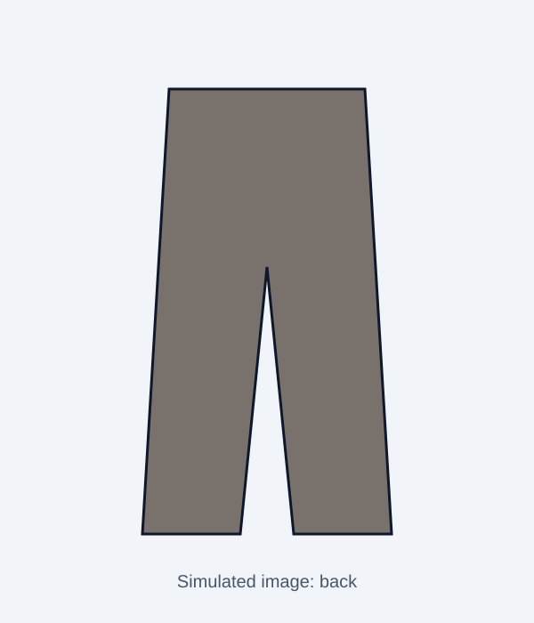

SIMULATED storefront for testing. Fictional brand, invented products and reviews.


Pleated Tapered Chinos
$79.00
Single-pleat chinos with a tapered leg and a little stretch.
Details
- Regular fit through the thigh, tapered leg
- Low stretch from 2% elastane
- Side pockets, belt loops
Fabric: 98% cotton, 2% elastane
Size guide: garment measurements
Measurements of the garment laid flat, full circumference, in cm.
| Size | Waist (cm) | Hip (cm) | Thigh (cm) | Inseam (cm) | Back rise (cm) |
|---|---|---|---|---|---|
| 30 | 84 | 104 | 62 | 80 | 27 |
| 32 | 88 | 108 | 64 | 80 | 27.5 |
| 34 | 92 | 112 | 66 | 80 | 28 |
| 36 | 96 | 116 | 68 | 80 | 28.5 |
Customer reviews (5)
Dev ★★★★☆
Comfortable, but the waist runs small. The 32 felt tight so I took a 34.
Rahul ★★★★☆
Waist runs tight, size up if you are between sizes.
Chris ★★★☆☆
The inseam is long for me at 5'6. Had to hem them.
Nina ★★★★★
Love the taper. Fits like the chart says.
Omar ★★★★☆
Inseam is long, plan on hemming.